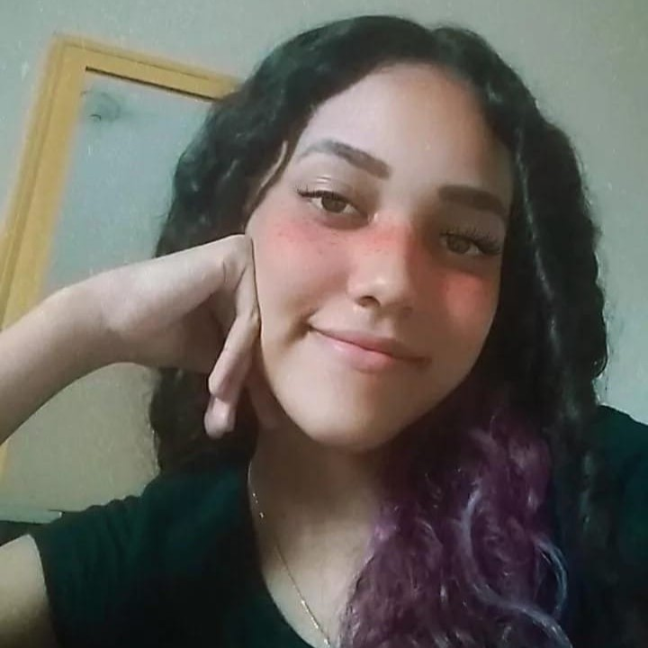

Olá, eu sou o Alex, tenho 15 anos, moro em Belo Horizonte e faço programa. Sou fanboy do Xereque (diva, ícone) e eu to doido. Tenho todos os transtornos mentais possíveis (muitos deles adquiri no Ceferno), invlusive afanalbetismo. Adoro essas coisas animadas de html e css, e às vezes C. Meu professor favorito é o Hasan S2.
Oii, me chamo Fabiana, tenho 16 anos, sou de BH e bi-caloura no Cefet. Gosto de dançar, ouvir todos os tipos de músicas, assistir séries e filmes, entre outras coisas, e amo esportes e animais. Minha matéria favorita do técnico é LPW e meu professor favorito também é o Hasan S2.

Oi, sou Geovana tenho 17 anos, sou bi-caloura no Cefet, fazendo o Tp1 pela segunda vez com colegas diferentes, moro em Ribeirão das Neves, amo jogos e futebol em geral, adquiri muitos transtornos mentais com esse anos no Ceferno e não tá tudo bem. Meus professores favoritos são o Maffort e o Hasan S2.
Oi, eu sou a Júlia, tenho 16 anos, moro em Belo Horizonte, estudo no Cefet-MG, estou no primeiro ano do ensino médio e faço o curso de informática. Eu gosto de assistir séries, ouvir música e o meu professor favorito também é o Hasan S2.

Oioi, meu nome é Marina, tenho 15 anos e sou de Belo Horizonte. Faço curso técnico de Informática no CEFET-MG, no primeiro ano do Ensino Médio. Gosto de Matemática, de assistir séries e de ouvir música. Meu professor favorito também é o Hasan S2.
Oii, me chamo Rebecca, mas pode chamar de Becca ou Becky se quiser,moro em Belo Horizonte, tenho 15 anos e nunca vou poder falar que vou fazer aniversário esse ano ou que fiz ano passado porque eu faço no primeiro dia do ano (01/01). Gosto de música, dança e aprender línguas estrangeiras, além de outras coisas, não vejo a hora de me formar apesar de ainda ser o primeiro ano. Aliás, meu professor preferido também é o Hassan S2.